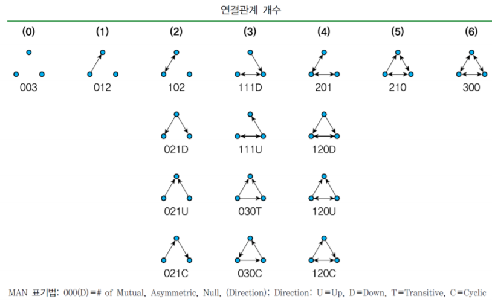
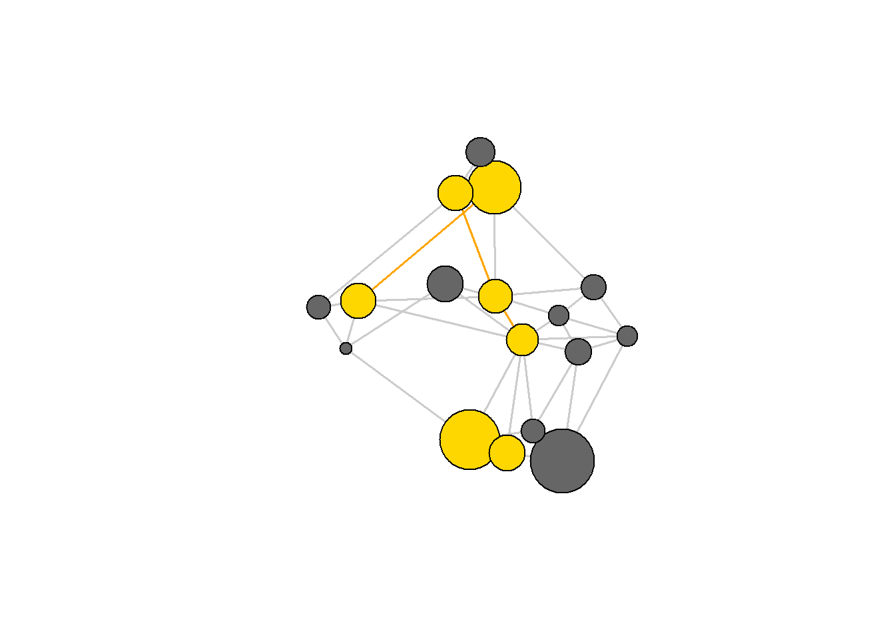
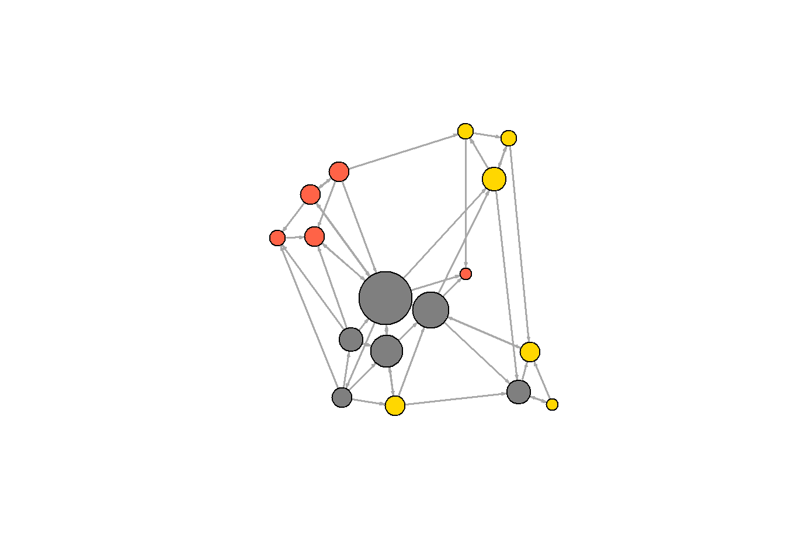
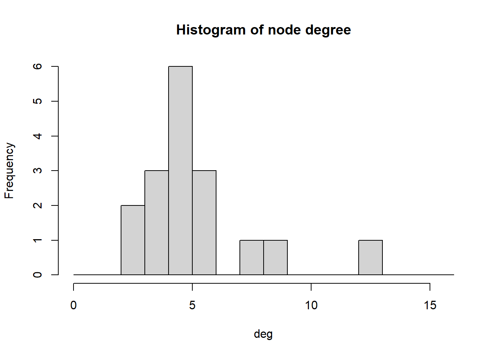
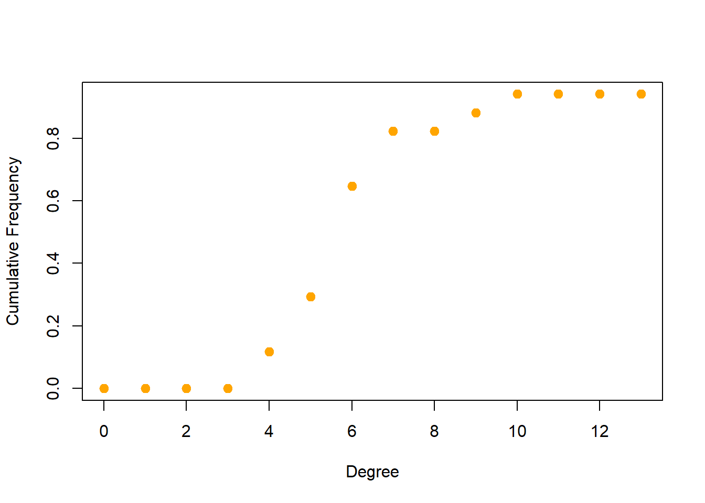

7 네트워크과 노드 설명
7.1 밀도(Density)
네트워크에 있는 모든 가능한 에지들 대비 현존 에지들의 비율을 밀도라고 한다.
밀도(density)는 네트워크에서 노드 간의 전반적인 연결정도 수준을 나타낸다.
- 밀도는 네트워크 내에 존재하는 최대 가능한 라인의 개수 대비 실제 존재하는 라인의 개수의 비율로 측정한다.
- 밀도가 높은 네트워크에 대해 우리는 일반적으로 응집력(cohesion)이 높다고 이야기한다
## [1] 0.1764706## [1] 0.17647067.2 호혜성(Reciprocity)
호혜성 : (방향성 네트워크에서의) 호혜적인 연결의 비율
- 액터들 간 연결관계의 상호 호혜적 관계를 호혜성(reciprocity)이라 한다.
- A에서 B로 향하는 연결관계가 존재하고 동시에 B에서 A로 향하는 연결관계가 존재하는 경우
- 네트워크의 응집성 정도
- 네트워크 간 호혜성의 차이는 종종 네트워크 구조의 계층적 특성, 힘이나 부의 불균형, 문화적 차이 등에 의해 설명된다(Borgatti et al. 2013)
호혜성의 측정 :
- 양자관계(dyad)에 초점을 맞춰서 호혜성을 측정
- 전체 연결된 액터쌍 대비 호혜적 액터쌍의 비율을 측정
- 두 개의 연결된 액터쌍(AB, BC)이 존재하고 이 중 호혜적 액터 쌍(AB)의 개수는 한 개이다. 따라서 호혜성 비율은 0.5(= 1 2 )가 된다.
- 선택관계(arc)에 초점을 맞춰서 호혜성을 측정
- 방향성을 고려한 선택관계 대비 호혜적 관계구조를 형성하는 라인의 비율을 측정
- 방향성을 고려한 선택관계는 세 개(AB, BA, BC)가 존재하고 그 중 두 개(AB, BA)가 상호 호혜적 관계구조를 형성한다.
## [1] 0.4166667## $mut
## [1] 10
##
## $asym
## [1] 28
##
## $null
## [1] 98## [1] 0.41666677.3 이행성(Transitivity)
호혜성은 두 액터(정점, 노드) 간의 관계로부터 정의되는 반면, 이행성(transitivity)은 세 액터(정점, 노드) 간의 관계인 삼자관계(triad)를 기반으 로 한다.
삼자관계는 세 개의 액터와 그 액터들 간의 연결관계로 구성된다. (삼자관계에 대한 분석은 기본적으로 방향/이진 그 래프를 대상으로 한다.)
- A가 B에 연결되어 있고 B는 C에 연결되어 있을 때 A가 C에 대해 연결관계를 가지면 이 삼자관계는 이행성을 충족한다 고 얘기한다.
- 즉 A → B이고 B → C이면서 동시에 A → C인 삼자관계는 이행성을 충족한다.
- 네트워크 내에 이행성을 충족하는 삼자관계가 많을수록 그 네트워크는 군집화된 구조(clumpy structure)를 갖게 되는 경향이 있다.
- 따라서 이런 의미에서 이행성은 네트워크의 군집화 및 구조적 균형의 정도를 나타낸다.
이행성의 측정 :
- 전체(
global) - 연결된 삼각관계(triples)에 대한 삼각형(triangle)(방향)의 비율 - 부분(
local) - 각 정점이 부분인 연결된 삼각관계에 대한 삼각형의 비율
## [1] 0.372549## [1] 0.372549## [1] 0.2142857 0.4000000 0.1153846 0.1944444 0.5000000 0.2666667 0.2000000
## [8] 0.1000000 0.3333333 0.3000000 0.3333333 0.2000000 0.1666667 0.1666667
## [15] 0.3000000 0.3333333 0.2000000## [1] 244 241 80 13 11 27 15 22 4 1 8 4 4 3 3 0삼자관계 유형(Triad types) (per Davis & Leinhardt):
삼자관계는 총 16가지 유형으로 분류해 볼 수 있으며 이렇게 분류된 삼자관계유형은 네트워크의 구조적 특징 및 이행성 정도를 측정하는 데 활용된다.
네트워크 내에 삼자관계 각 유형이 어느 정 도 출현하는지를 조사하여 네트워크의 구조 적 특성을 이해하는 것을 삼자관계 센서스 (triad census)라고 한다.
- 003 A, B, C, 빈 삼자관계.
- 012 A->B, C
- 102 A<->B, C
- 021D A<-B->C
- 021U A->B<-C
- 021C A->B->C
- 111D A<->B<-C
- 111U A<->B->C
- 030T A->B<-C, A->C
- 030C A<-B<-C, A->C.
- 201 A<->B<->C.
- 120D A<-B->C, A<->C.
- 120U A->B<-C, A<->C.
- 120C A->B->C, A<->C.
- 210 A->B<->C, A<->C.
- 300 A<->B<->C, A<->C, 완전 연결

7.4 지름(Diameter)
네트워크 지름은 네트워크에서 (두 노드 사이의 최단 경로의 길이인) 가장 긴 측지선 거리이다. igraph에서, diameter() 함수가 거리를 반환한다. 반면에, get_diameter() 함수는 그 거리의 첫 번째 발견된 경로에 있는 노드들을 반환한다. 만일 NA로 설정되어 있지 않다면, 에지의 가중치가 기본 값으로 사용됨을 주목하기 바란다.
## [1] 4## [1] 28## + 7/17 vertices, named, from 161b34c:
## [1] s12 s06 s17 s04 s03 s08 s07get_diameter() 함수는 정점 시퀀스(vertex sequence)를 반환함을 주목하라.
그러나 벡터와 같이 작동하도록 요청되었을 때, 정점 시퀀스는 그 안에 있는 노드들의 수치 색인을 생성하게 됨을 주목하라. 에지 시퀀스에도 동일하게 적용된다.
## [1] "igraph.vs"## [1] 12 6 17 4 3 8 7지름 내의 노드들 색 지정하기 :
vcol <- rep("gray40", vcount(net))
vcol[diam] <- "gold"
ecol <- rep("gray80", ecount(net))
ecol[E(net, path=diam)] <- "orange"
# E(net, path=diam) : 'diam' 경로에 따른 에지들
plot(net, vertex.color=vcol, edge.color=ecol, edge.arrow.mode=0)
7.5 노드 연결 정도(Node degrees)
degree() 함수의 mode 파라미터는 in for in-degree, out for out-degree, 그리고 all 또는 total for total degree 값을 갖는다.

노드 연결 정도의 분포 :

7.6 연결 정도 분포(Degree distribution)
deg.dist <- degree_distribution(net, cumulative=T, mode="all")
plot( x=0:max(deg), y=1-deg.dist, pch=19, cex=1.2, col="orange",
xlab="Degree", ylab="Cumulative Frequency")
7.7 중심성과 중심화(Centrality & centralization)
(노드 수준에서의) 중심성 함수(Centrality functions)들과 (그래프 수준의) 중심화 함수(centralization functions).
중심화 함수들은 노드의 연결 중심성 값인 res, 중심화 값인 centralization, 그리고 이 사이즈 그래프에 대한 최대 중심화 점수인 theoretical_max 등을 반환한다. 중심화 함수는 (vids 파리미터로 설정된) 노드의 부분집합에서 실행된다. 이는 모든 중심성을 계산하는데 많은 자원이 요구되고 작업하는데 많은 시간이 걸리는 대규모 그래프에서 유용한다.
연결 정도(Degree) (연결의 수, number of ties) : degree() 함수와 centr_degree()함수
## s01 s02 s03 s04 s05 s06 s07 s08 s09 s10 s11 s12 s13 s14 s15 s16 s17
## 4 2 6 4 1 4 1 2 3 4 3 3 2 2 2 1 4## $res
## [1] 4 2 6 4 1 4 1 2 3 4 3 3 2 2 2 1 4
##
## $centralization
## [1] 0.1985294
##
## $theoretical_max
## [1] 272근접 중심성(Closeness) (그래프에서 다른 노드들과의 거리에 기반한 중심성) : closeness() 함수와 centr_clo() 함수
노드에 있는 다른 노들들까지의 노드의 평균 측지 거리(average geodesic distance)의 역수.
## s01 s02 s03 s04 s05 s06 s07
## 0.03333333 0.03030303 0.04166667 0.03846154 0.03225806 0.03125000 0.03030303
## s08 s09 s10 s11 s12 s13 s14
## 0.02857143 0.02564103 0.02941176 0.03225806 0.03571429 0.02702703 0.02941176
## s15 s16 s17
## 0.03030303 0.02222222 0.02857143## $res
## [1] 0.5333333 0.4848485 0.6666667 0.6153846 0.5161290 0.5000000 0.4848485
## [8] 0.4571429 0.4102564 0.4705882 0.5161290 0.5714286 0.4324324 0.4705882
## [15] 0.4848485 0.3555556 0.4571429
##
## $centralization
## [1] 0.3753596
##
## $theoretical_max
## [1] 7.741935아이겐벡터 중심성(고유벡터, Eigenvector) (연결 중심성 합에 비례한 중심성) : eigen_centrality() 함수와 centr_eigen() 함수
그래프 행렬의 첫 번째 아이겐벡터 값들.
## $vector
## s01 s02 s03 s04 s05 s06 s07 s08
## 0.6638179 0.3314674 1.0000000 0.9133129 0.3326443 0.7468249 0.1244195 0.3740317
## s09 s10 s11 s12 s13 s14 s15 s16
## 0.3453324 0.5991652 0.7334202 0.7519086 0.3470857 0.2915055 0.3314674 0.2484270
## s17
## 0.7503292
##
## $value
## [1] 3.006215
##
## $options
## $options$bmat
## [1] "I"
##
## $options$n
## [1] 17
##
## $options$which
## [1] "LR"
##
## $options$nev
## [1] 1
##
## $options$tol
## [1] 0
##
## $options$ncv
## [1] 0
##
## $options$ldv
## [1] 0
##
## $options$ishift
## [1] 1
##
## $options$maxiter
## [1] 1000
##
## $options$nb
## [1] 1
##
## $options$mode
## [1] 1
##
## $options$start
## [1] 1
##
## $options$sigma
## [1] 0
##
## $options$sigmai
## [1] 0
##
## $options$info
## [1] 0
##
## $options$iter
## [1] 7
##
## $options$nconv
## [1] 1
##
## $options$numop
## [1] 31
##
## $options$numopb
## [1] 0
##
## $options$numreo
## [1] 18## $vector
## [1] 0.6638179 0.3314674 1.0000000 0.9133129 0.3326443 0.7468249 0.1244195
## [8] 0.3740317 0.3453324 0.5991652 0.7334202 0.7519086 0.3470857 0.2915055
## [15] 0.3314674 0.2484270 0.7503292
##
## $value
## [1] 3.006215
##
## $options
## $options$bmat
## [1] "I"
##
## $options$n
## [1] 17
##
## $options$which
## [1] "LR"
##
## $options$nev
## [1] 1
##
## $options$tol
## [1] 0
##
## $options$ncv
## [1] 0
##
## $options$ldv
## [1] 0
##
## $options$ishift
## [1] 1
##
## $options$maxiter
## [1] 1000
##
## $options$nb
## [1] 1
##
## $options$mode
## [1] 1
##
## $options$start
## [1] 1
##
## $options$sigma
## [1] 0
##
## $options$sigmai
## [1] 0
##
## $options$info
## [1] 0
##
## $options$iter
## [1] 7
##
## $options$nconv
## [1] 1
##
## $options$numop
## [1] 31
##
## $options$numopb
## [1] 0
##
## $options$numreo
## [1] 18
##
##
## $centralization
## [1] 0.5071775
##
## $theoretical_max
## [1] 16중개 중심성(Betweenness) (다른 노드들을 연결하는 중개자 위치에 기반한 중심성) : betweenness() 함수, edge_betweenness() 함수 그리고 centr_betw() 함수
노드나 에지를 거쳐가는 측지 수(number of geodesics).
## s01 s02 s03 s04 s05 s06
## 24.0000000 5.8333333 127.0000000 93.5000000 16.5000000 20.3333333
## s07 s08 s09 s10 s11 s12
## 1.8333333 19.5000000 0.8333333 15.0000000 0.0000000 33.5000000
## s13 s14 s15 s16 s17
## 20.0000000 4.0000000 5.6666667 0.0000000 58.5000000## [1] 10.833333 11.333333 8.333333 9.500000 4.000000 12.500000 3.000000
## [8] 2.333333 24.000000 16.000000 31.500000 32.500000 9.500000 6.500000
## [15] 23.000000 65.333333 11.000000 6.500000 18.000000 8.666667 5.333333
## [22] 10.000000 6.000000 11.166667 15.000000 21.333333 10.000000 2.000000
## [29] 1.333333 4.500000 11.833333 16.833333 6.833333 16.833333 31.000000
## [36] 17.000000 18.000000 14.500000 7.500000 28.500000 3.000000 17.000000
## [43] 5.666667 9.666667 6.333333 1.000000 15.000000 74.500000## $res
## [1] 24.0000000 5.8333333 127.0000000 93.5000000 16.5000000 20.3333333
## [7] 1.8333333 19.5000000 0.8333333 15.0000000 0.0000000 33.5000000
## [13] 20.0000000 4.0000000 5.6666667 0.0000000 58.5000000
##
## $centralization
## [1] 0.4460938
##
## $theoretical_max
## [1] 3840